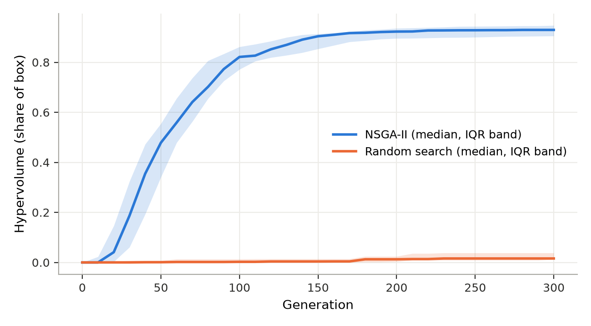
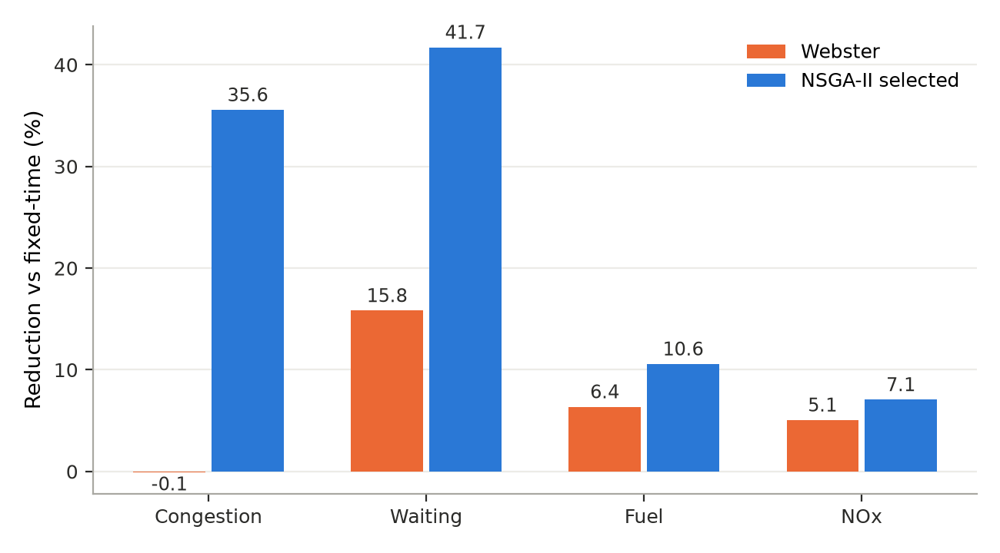
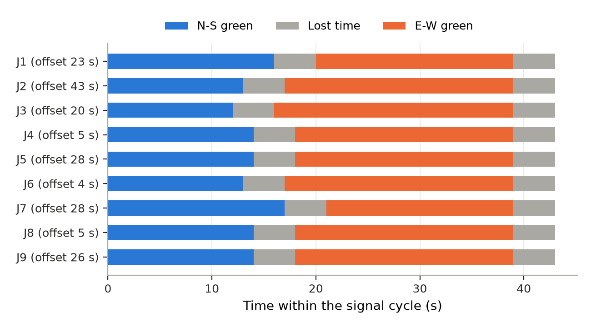
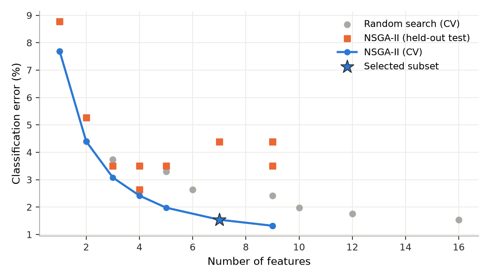
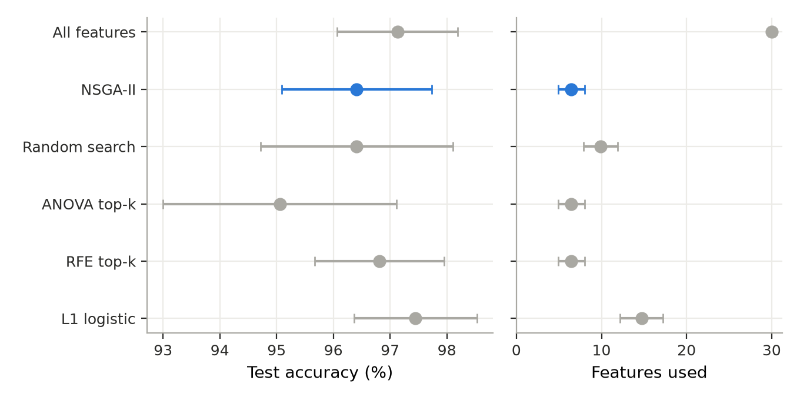
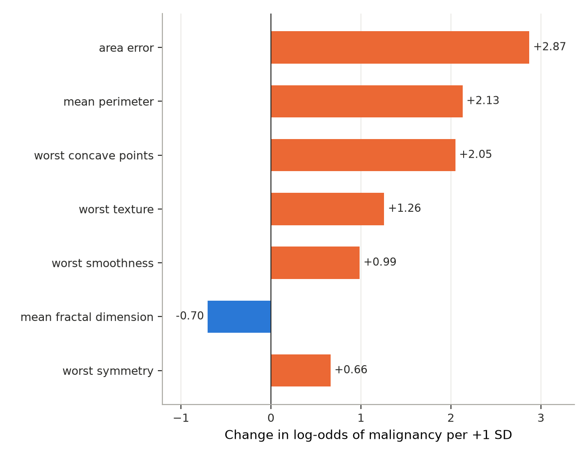
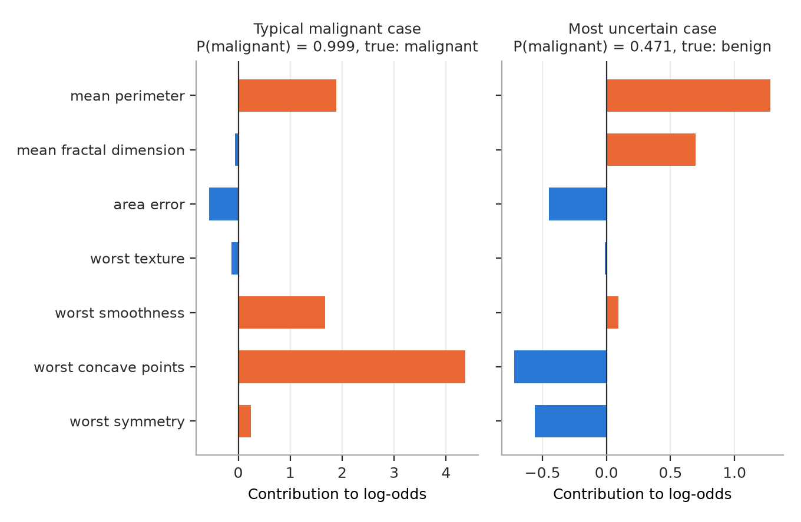
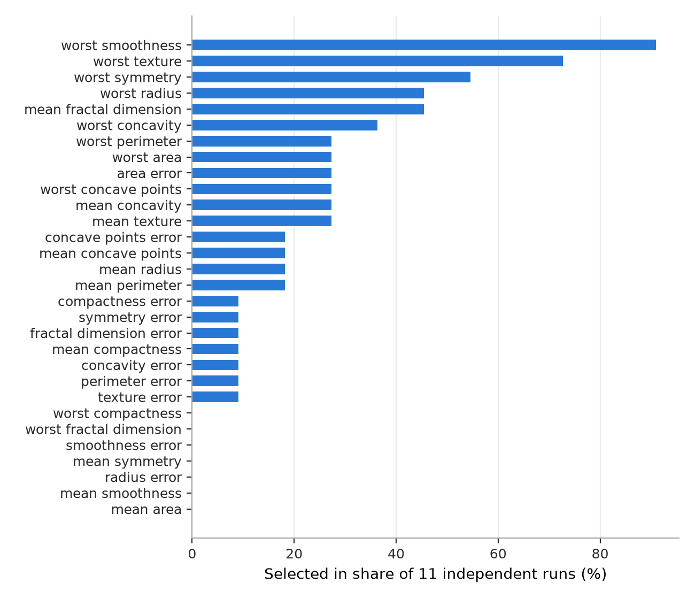

NSGA-II projects — viva sheet
Two projects, one shared algorithm. Code: D:\files\stud\evo\traffic_signal_moga (Project A) and D:\files\stud\evo\explainable_ai_ga (Project B). Every number on this sheet comes from the actual runs (results/RESULTS.md). Back: Interview Prep
1. 30-second pitches
Project A: Smart City Traffic Signal Optimization Using Multi-Objective Genetic Algorithm
Project B: Explainable AI Model Optimized by Genetic Algorithms
2. Genetic algorithm basics
| Term | Meaning | Project A | Project B |
|---|---|---|---|
| Individual / chromosome | One candidate solution, encoded as genes | 19 real numbers: one signal plan | 30 bits: one feature subset |
| Population | A set of individuals evolved together | 100 plans | 80 masks |
| Fitness | How good an individual is | 4 objectives from the traffic simulator | CV error and feature count |
| Selection | Better individuals become parents more often | Binary tournament on rank, then crowding distance | |
| Crossover | Combine two parents into children | SBX (real-coded) | Uniform (binary) |
| Mutation | Small random change, keeps diversity | Polynomial mutation | Bit flip |
| Elitism | The best are never lost | Parents and children compete; the best N survive | |
| Generation | One loop of select → vary → evaluate → survive | 300 | 80 |
- Exploration (search new regions) comes mainly from mutation and diverse starting points. Exploitation (refine good regions) comes from selection and crossover.
- GA is a population-based, derivative-free method. That suits both projects: the traffic simulator and cross-validation error have no usable gradient, and project B's space is discrete.
- Compared with simulated annealing (one solution, accepts worse moves with a temperature) and ACO (pheromone on graph edges), a GA keeps a whole population. That is exactly what multi-objective search needs, because one run must return many trade-off solutions.
3. Multi-objective optimisation
Why not just add the objectives with weights?
- The weights are arbitrary, and objectives have different units (seconds, mL, grams, feature counts).
- One weighted run gives one answer. You would need a run per weight setting to see the trade-off.
- A weighted sum cannot find solutions on non-convex parts of the front.
- NSGA-II returns the whole front in one run, and the decision maker chooses afterwards.
Choosing one solution from the front
| Project | Rule | Why |
|---|---|---|
| A | Normalise each objective on the front to 0–1, pick the plan closest to the ideal point (0, 0, 0, 0) | A balanced compromise, with no weights |
| B | One-standard-error rule: fewest features whose CV error is within 1 SE of the best | Prefers the simpler model when the extra accuracy is within noise |
4. NSGA-II step by step
Deb, Pratap, Agarwal and Meyarivan, 2002. Non-dominated Sorting Genetic Algorithm II.
- Initialise N random individuals and evaluate them.
- Rank them by non-dominated sorting: rank 0 is the Pareto front, rank 1 is the front once rank 0 is removed, and so on.
- Crowding distance inside each front: how much empty space surrounds a point.
- Binary tournament: pick two at random; lower rank wins; on a tie, larger crowding distance wins.
- Crossover and mutation make N children. Evaluate them.
- Merge parents and children (2N), re-rank, and keep the best N by rank, then crowding distance. This is the elitism.
- Repeat from step 4 for the set number of generations. Return rank 0.
Crowding distance
For each objective, sort the front. The two end points get infinity, so the extremes always survive. Each inner point gets the gap between its two neighbours, divided by the objective's range. Sum over objectives.
Larger distance means a lonelier point, which is preferred, so the front stays spread out instead of crowding into one region.
Three key features of NSGA-II
- Fast non-dominated sorting: O(M N²), against O(M N³) in the original NSGA.
- Elitism: parents compete with children.
- Crowding distance replaces NSGA's sharing parameter σ, so there is no niche radius to tune.
5. Hypervolume
- A (4 objectives): estimated by Monte Carlo. 100,000 fixed random points in the normalised box [0, 1.1]⁴; hypervolume is the share of points dominated by at least one front member.
- B (2 objectives): computed exactly by sorting the points and adding up rectangles (
hypervolume()inmain.py). - Both projects normalise all runs and both methods on one shared box, so the numbers are comparable.
6. Project A — Traffic signals at a glance
| Item | Value |
|---|---|
| Objective | Minimise traffic congestion, vehicle waiting time, fuel consumption and pollution by optimising signal timings |
| Network | 3 × 3 grid, junctions J1–J9, 36 approach links, unequal block lengths |
| Chromosome | 19 real genes: shared cycle + (green split, offset) × 9 |
| Objectives | Congestion (veh), waiting (s/veh), fuel (mL/veh), NOx (g/veh) |
| Algorithm | NSGA-II, population 100, 300 generations, 30,100 evaluations per run |
| Runs | 11 seeds for NSGA-II, 11 for random search |
| Baselines | Fixed-time 60 s equal split; Webster's method |
| Files | traffic.py (simulator), nsga2.py, main.py, test_project.py, MODEL.md, README.md |
| Runtime | About 17 minutes on 8 worker processes |
7. Project A — Traffic model
| Parameter | Value |
|---|---|
| Block lengths | Rows 290 m, 410 m; columns 340 m, 470 m |
| Speed | 54 km/h (0.015 km/s) |
| Saturation flow | 0.5 veh/s = 1800 veh/h per approach |
| Lost time | 4 s after each phase (amber + all-red), so 8 s per cycle |
| Turning | 80 % straight, 10 % left, 10 % right, no U-turns |
| Demand | Entry rates 0.13 / 0.11 / 0.21 / 0.17 veh/s (S / N / E / W-bound), each × random 0.85–1.15. East–west is the busy arterial |
| Time | 1800 s of demand + 300 s clearance, 1 s step |
Queue (store-and-forward) model
queue = queue + arrivals served = min(queue, saturation × green) # discharge only on green queue = queue − served
- Point queue: vehicles stack up at the stop line. There is no spillback into the junction behind.
- Routing matrix R (36 × 36): R[a, b] is the share of link a's outflow that enters link b.
- Robertson platoon dispersion (TRANSYT model): a released platoon spreads out on its way to the next junction. Travel delay is 0.8 × free-flow time, and smoothing factor F = 1 / (1 + 0.35 × 0.8 × T).
- Stop: an arriving vehicle counts as a stop if the light is red or a queue already exists.
- Fluid vs Poisson: the search uses smooth (fluid) demand. With a seed, arrivals become Poisson random numbers for testing.
8. Project A — Chromosome and decoding
| Gene | Range | Decoded as |
|---|---|---|
| C | 40–120 s | Cycle, rounded to whole seconds, shared by all junctions |
| sᵢ | 0–1 | N-S green = sᵢ × (C − 8), clipped so both greens are ≥ 10 s. E-W green = the rest |
| oᵢ | 0–1 | Offset = oᵢ × C seconds |
Why one shared cycle? (the design story)
Our first version gave every junction its own green times, so each had its own cycle. With different cycles, the time difference between neighbouring greens drifts every cycle, so offsets mean nothing and no green wave can form. In that version NSGA-II could not even beat Webster. A shared cycle is also standard practice for coordinated signals.
Feasible by construction
Every decoded plan satisfies the safety limits (10 s minimum green, cycle 40–120 s). So there is no penalty function and no repair step needed.
Phase timing inside one cycle
|— N-S green —|— 4 s lost —|— E-W green —|— 4 s lost —| (repeats every C seconds) phase = (t + offset) mod C
9. Project A — Four objectives
| Objective | Formula | Unit |
|---|---|---|
| Congestion | Mean over the 36 links of each link's peak queue | veh |
| Waiting | W / N, where W = total queued vehicle-seconds, N = vehicles entered | s/veh |
| Fuel | 1000 × (0.00028 W + 0.012 S + 0.07 D) / N | mL/veh |
| NOx | (0.0008 W + 0.06 S + 0.4 D) / N | g/veh |
S = total stops, D = total vehicle-km. Idling fuel ≈ 1 L/h. Rates are order-of-magnitude assumptions, not calibrated, so we compare percentages, not absolute values.
- Why NOx, not CO₂? CO₂ = 2.31 kg per litre of petrol, so it is exactly proportional to fuel and would repeat that objective. NOx is weighted mostly by stops (acceleration), so it behaves differently. CO₂ is still reported as a derived value.
- Why congestion as peak queue? Average queue is proportional to waiting time (Little's law), so it would duplicate it. Peak queue measures how close links come to overflowing.
- Where is the conflict? Short cycles reduce waiting but cause more stop-start driving, which costs fuel and NOx.
10. Project A — SBX and polynomial mutation
Simulated binary crossover (SBX, η = 15)
Mimics one-point crossover on binary strings, but for real numbers. Children are spread around the parents:
u = random(0, 1) β = (2u)^(1/(η+1)) if u ≤ 0.5 β = (1 / (2(1−u)))^(1/(η+1)) otherwise child1 = 0.5 × ((1+β) p1 + (1−β) p2) child2 = 0.5 × ((1−β) p1 + (1+β) p2)
- Larger η gives children closer to the parents.
- The children's mean always equals the parents' mean.
- A pair crosses with probability 0.9. Within a pair, each gene crosses with probability 0.5.
Polynomial mutation (η = 20)
δ = (2u)^(1/(η+1)) − 1 if u < 0.5 δ = 1 − (2(1−u))^(1/(η+1)) otherwise x' = clip(x + δ × (high − low), low, high)
Gene rate 1/19, so on average one gene per child changes. Small changes are far more likely than large ones.
11. Project A — Experiment design
Baselines
- Fixed-time: 60 s cycle, equal greens, zero offsets. A typical default plan.
- Webster's method (1958): the classic textbook formula for a single junction.
L = 8 s lost per cycle. y = flow / saturation flow for the critical approach of each phase, and Y is their sum. We used the largest junction's C₀ (75.7 s) as the common cycle, with zero offsets.
Making the results trustworthy
- 11 independent seeds; report the run with the median hypervolume, not the best.
- Random search with the same number of evaluations, to prove the GA matters.
- Unseen traffic: final plans re-tested on 30 Poisson seeds. All plans get the same arrivals per seed (common random numbers).
- Demand sensitivity: re-tested at 80 %, 100 % and 120 % demand.
- Ablation: the selected plan with offsets set to zero, to measure how much coordination contributes.
12. Project A — Results
| Poisson demand, 30 seeds | Fixed-time | Webster | NSGA-II selected | vs Webster |
|---|---|---|---|---|
| Congestion (veh) | 11.28 | 11.29 | 7.27 | −35.6 % |
| Waiting (s/veh) | 76.04 | 64.02 | 44.33 | −30.8 % |
| Fuel (mL/veh) | 105.58 | 98.87 | 94.42 | −4.5 % |
| NOx (g/veh) | 0.520 | 0.494 | 0.484 | −2.1 % |
- Hypervolume (11 runs): NSGA-II 0.907 (sd 0.062), random search 0.032. Random search barely moves.
- Selected plan: common cycle 43 s. East–west gets more green at every junction. All 11 runs chose cycles of 40–43 s.
- Offsets matter: with offsets set to zero, waiting rises from 44.3 to 55.7 s/veh.
- Optimism: the gain over Webster was 54.3 % on smooth demand but 30.8 % on random demand. Green waves suffer when arrivals are irregular.
- Correlation on the front: congestion–waiting +0.98, fuel–NOx +0.99, waiting–fuel −0.84. In effect there are two competing groups.
- Fuel and NOx gain less because distance driven is the same for every plan and forms a big fixed part of both.
| Waiting (s/veh) by demand | Fixed-time | Webster | NSGA-II |
|---|---|---|---|
| 80 % | 55.1 | 55.4 | 29.0 |
| 100 % | 76.0 | 64.0 | 44.3 |
| 120 % | 127.3 | 87.8 | 119.9 |





13. Project A — Code walkthrough
| File | What it contains |
|---|---|
traffic.py | Constants, build_routing(), build_demand(), decode(), simulate(), fixed_plan(), webster_plan() |
nsga2.py | pareto_rank, crowding_distance, tournament, crossover (SBX), mutate (polynomial), nsga2, random_search |
main.py | Runs 22 searches in parallel (multiprocessing.Pool), hypervolume, baselines, Poisson tests, figures, RESULTS.md |
test_project.py | 12 assert-based checks |
Decoding a whole population at once
def decode(x):
cycle = np.rint(x[:, :1]) # column 0, kept 2-D
usable = cycle - 2 * LOST
green_ns = np.clip(np.rint(x[:, 1::2] * usable), GREEN_MIN, usable - GREEN_MIN)
green_ew = usable - green_ns
offset = np.rint(x[:, 2::2] * cycle)
return green_ns, green_ew, cycle, offset
xhas shape (plans, 19).x[:, 1::2]takes genes 1, 3, 5 … (splits);x[:, 2::2]takes 2, 4, 6 … (offsets).x[:, :1]keeps shape (plans, 1), so it broadcasts across the 9 junctions.
One simulated second (inside simulate)
phase = (t + offset) % cycle ns = phase < green_ns ew = (phase >= green_ns + LOST) & (phase < green_ns + LOST + green_ew) green = np.stack([ns, ns, ew, ew], axis=2).reshape(plans, LINKS) platoon += SMOOTHING * (in_transit[t % BUFFER] - platoon) # Robertson dispersion stops = stops + (arrivals * (~green | (queue > 0))).sum(1) queue += arrivals served = np.minimum(queue, SATURATION * green) queue -= served leaving = (served[:, FEEDERS] * FEEDER_SHARES).sum(2) # = served @ ROUTING in_transit[(t + DELAY) % BUFFER, :, link_index] = leaving.T # arrive DELAY s later
- Arrays are (plans × links), so all 100 plans are simulated together with no Python loop over plans. This vectorisation makes a whole generation take a fraction of a second.
in_transitis a ring buffer: slot(t + DELAY) % BUFFERstores vehicles that will arrive DELAY seconds later.FEEDERS: each link has at most 3 feeder links (straight and two turns), so a gather-and-sum replaces a 36 × 36 matrix multiply. A test checks both give the same answer.
Non-dominated sorting in one expression
def pareto_rank(F):
dominates = (F[:, None] <= F).all(2) & (F[:, None] < F).any(2)
dominated_by = dominates.sum(0)
rank = np.full(len(F), -1)
level = 0
while (rank < 0).any():
front = (dominated_by == 0) & (rank < 0)
rank[front] = level
dominated_by -= dominates[front].sum(0)
level += 1
return rank
dominates[i, j]is True if i dominates j.F[:, None]has shape (N, 1, M), so broadcasting compares every pair at once.dominated_by[j]counts how many points dominate j. Points with 0 form the current front. Removing them reduces the counts of the points they dominated, revealing the next front.
Elitist survival
X = np.vstack([X, children]) F = np.vstack([F, evaluate(children)]) rank = pareto_rank(F) crowd = crowding_distance(F, rank) best = np.lexsort((-crowd, rank))[:pop_size] # sort by rank, then by larger crowding
np.lexsort sorts by the last key first, so this orders by rank, and breaks ties by larger crowding distance (hence the minus sign).
14. Project B — Explainable AI at a glance
| Item | Value |
|---|---|
| Objective | Develop an accurate classification model while selecting a small and interpretable set of features |
| Dataset | Breast Cancer Wisconsin (Diagnostic): 569 samples, 212 malignant / 357 benign, 30 numeric features. Malignant = positive class |
| Classifier | Logistic regression (L2, C = 1, liblinear), features standardised |
| Chromosome | 30-bit mask, 1 = keep the feature |
| Objectives | 5-fold CV error, number of features (both minimised) |
| Algorithm | NSGA-II, population 80, 80 generations, 6,480 nominal masks per run |
| Validation | 11 stratified 80/20 splits (455 train, 114 test); search sees only train |
| Baselines | All features, random search, ANOVA top-k, RFE top-k, L1 logistic |
| Files | model.py, nsga2.py, main.py, test_project.py, MODEL.md, README.md |
| Runtime | About 2–4 minutes on 8 worker processes |
Each of 10 cell-nucleus properties (radius, texture, perimeter, area, smoothness, compactness, concavity, concave points, symmetry, fractal dimension) is recorded 3 ways: mean, standard error (named "error") and "worst" (mean of the 3 largest values). 10 × 3 = 30.
15. Project B — Explainability concepts
| Approach | Idea | Examples |
|---|---|---|
| Interpretable by design (ours) | The model itself is simple enough to read | Logistic regression, small decision trees, rule lists |
| Post-hoc explanation | Explain a black box afterwards, approximately | LIME, SHAP, saliency maps |
Rudin (2019) argues that for high-stakes decisions like medicine, an interpretable model is safer than explaining a black box, because a post-hoc explanation can be wrong about what the model really does. Our explanations are exact, not approximations.
Logistic regression
- z = (value − mean) / sd, using training data only. So each weight means "per 1 standard deviation", and weights are comparable.
- Global explanation: weight w. Positive raises risk. Odds ratio = ew: how many times the odds multiply for +1 SD. Example: area error, w = +2.87, odds ratio 17.67.
- Local explanation: contribution of feature i for one patient = wᵢ × zᵢ. Intercept + all contributions = the exact score. A test checks this.
- Stability: how often each feature is chosen across 11 runs. Mean Jaccard similarity = |A ∩ B| / |A ∪ B| over all pairs of chosen subsets.
16. Project B — Binary chromosome and fitness
mask = [0 0 1 0 … 1 0 1] (30 genes; 1 = feature used) 2³⁰ − 1 ≈ 1.07 billion possible non-empty subsets
| Design choice | Why |
|---|---|
| Random density 5–95 % at initialisation | Each bit at 50 % would start almost every mask near 15 features, leaving small subsets unexplored |
| Uniform crossover (pair rate 0.9, swap 0.5) | Feature order has no meaning, so one-point crossover's position bias is unwanted |
| Bit-flip mutation, rate 1/30 | One expected change per child: add or drop a feature |
| Repair empty masks | A model needs at least one feature, so one random bit is switched on |
| Remove duplicates before survival | Otherwise copies of a good mask fill the population and diversity collapses |
| Cache by mask bytes | A repeated mask is never retrained, which saves a lot of time |
Fitness
- f₁ error = misclassified samples across 5 stratified folds ÷ training samples.
- f₂ size = number of 1-bits.
- The scaler is fitted inside each fold, so validation data never leaks into the scaling.
17. Project B — Nested validation and selection bias
for each of 11 outer splits:
train (80 %) → NSGA-II with inner 5-fold CV → Pareto front → 1-SE rule → one mask
test (20 %) → locked; used once to score the refitted model
- Inner loop (5-fold CV on train): guides the search.
- Outer loop (11 test sets): gives the honest estimate.
- Evidence it mattered: chosen subsets had mean CV error 1.64 % but test error 3.59 %, a gap of 1.95 points. Searching thousands of subsets overfits the validation folds.
- The reported "median run" is picked by training hypervolume, so test data plays no part in that choice either.
- We did not tune the method after seeing test scores. Only the L1 baseline's solver settings changed, to fix convergence warnings.
18. Project B — One-standard-error rule
e = best CV error on the front, n = 455 training samples. This is a binomial standard error. If a larger model is better only within noise, take the smaller one, because it is easier to read and less likely to be overfitted. Across 11 runs it chose 5 to 11 features (mean 6.5).
19. Project B — Baselines
| Method | How it selects | Type |
|---|---|---|
| All features | Uses all 30 | Reference |
| Random search | Random masks, same budget and same 1-SE rule | Control for the GA |
| ANOVA top-k | Best k features by univariate F-test, each feature judged alone | Filter |
| RFE top-k | Fit, drop the weakest coefficient, repeat until k remain (Guyon et al., 2002) | Wrapper (greedy) |
| L1 logistic | L1 penalty pushes weights to exactly zero; strength picked by inner CV (Tibshirani, 1996) | Embedded |
k for ANOVA and RFE = the size NSGA-II chose in that split, so they compare at the same model size. Every method then refits the same logistic regression on its chosen features, so only the feature choice differs.
20. Project B — Results
| Method (11 splits) | Test accuracy % | Malignant recall % | AUC | Features | Stability |
|---|---|---|---|---|---|
| All features | 97.13 ± 1.06 | 95.24 | 0.9952 | 30.0 | 1.00 |
| NSGA-II | 96.41 ± 1.32 | 93.72 | 0.9943 | 6.5 | 0.25 |
| Random search | 96.41 ± 1.69 | 93.51 | 0.9948 | 9.9 | 0.26 |
| ANOVA top-k | 95.06 ± 2.06 | 92.21 | 0.9910 | 6.5 | 0.77 |
| RFE top-k | 96.81 ± 1.14 | 95.02 | 0.9961 | 6.5 | 0.77 |
| L1 logistic | 97.45 ± 1.09 | 95.24 | 0.9956 | 14.7 | 0.67 |
- Main claim: 78 % fewer features (6.5 vs 30) for 0.72 points less accuracy, which is within the split-to-split standard deviation.
- vs random search: same accuracy, but random needed 9.9 features. Hypervolume 0.782 vs 0.740.
- vs RFE: RFE was slightly better at the same size and far more stable. NSGA-II did not beat RFE. Its advantage: the whole trade-off curve in one run, and an automatic choice of size (RFE needs k given).
- vs L1: most accurate, but more than twice the features.
- Confusion (pooled over 11 tests): 776 TN, 16 FP, 29 FN, 433 TP. 29 malignant cases missed. That is the most serious error in medicine.
- Final model (median run, split 3): 7 features, test accuracy 95.61 %, recall 95.24 %, AUC 0.9970.
| Final model feature | Weight per SD | Odds ratio |
|---|---|---|
| area error | +2.872 | 17.67 |
| mean perimeter | +2.130 | 8.42 |
| worst concave points | +2.049 | 7.76 |
| worst texture | +1.259 | 3.52 |
| worst smoothness | +0.986 | 2.68 |
| mean fractal dimension | −0.704 | 0.49 |
| worst symmetry | +0.663 | 1.94 |
| Intercept | −0.442 | – |
- Typical malignant patient: P = 0.999; worst concave points adds +4.37 to the log-odds.
- Most uncertain patient: P = 0.471, truly benign. Mean perimeter pushes up (+1.28), worst concave points pushes down (−0.72). You can see exactly why it was a close call.
- Most often chosen: worst smoothness (10 of 11 runs), worst texture (8 of 11).
- Redundancy: mean |correlation| among chosen features 0.33 vs 0.40 across all 30; highest pair 0.79.





21. Project B — Code walkthrough
| File | What it contains |
|---|---|
model.py | load_data, make_classifier, make_evaluator, choose_subset (1-SE), assess (test metrics), anova_mask, rfe_mask, lasso_mask, contributions, jaccard_stability |
nsga2.py | Same ranking and crowding as A, plus repair, random_masks, uniform crossover, bit-flip mutate |
main.py | outer_split, run_split (one split: search + all baselines), exact 2-D hypervolume, figures, RESULTS.md |
test_project.py | 11 assert-based checks |
Cached, leak-free fitness (inside make_evaluator)
def cv_error(mask):
key = mask.tobytes()
if key not in cache:
wrong = 0
for x_fit, y_fit, x_valid, y_valid in folds: # 5 pre-scaled folds
fitted = make_classifier().fit(x_fit[:, mask], y_fit)
wrong += int((fitted.predict(x_valid[:, mask]) != y_valid).sum())
cache[key] = wrong / len(y)
return cache[key]
- The 5 folds are scaled once on all 30 columns, with each scaler fitted on that fold's training part. A mask just picks columns, so this is both fast and leak-free.
x_fit[:, mask]: boolean column indexing.mask.tobytes()turns the array into a hashable dictionary key.- A test checks this equals scikit-learn's
make_pipeline(StandardScaler(), LogisticRegression)withcross_val_predict.
Binary operators
def crossover(a, b, rng):
swap = rng.random(a.shape) < 0.5 # each gene: 50 % swap
swap &= rng.random((len(a), 1)) < CROSSOVER_RATE # whole pair: 90 % cross
return np.where(swap, b, a), np.where(swap, a, b)
def mutate(masks, rng):
return masks ^ (rng.random(masks.shape) < 1 / masks.shape[1]) # XOR flips bits
One-standard-error rule
def choose_subset(F, n_samples):
best = F[:, 0].min()
standard_error = np.sqrt(best * (1 - best) / n_samples)
allowed = np.flatnonzero(F[:, 0] <= best + standard_error)
return allowed[np.lexsort((F[allowed, 0], F[allowed, 1]))[0]] # fewest features, then lowest error
Exact 2-D hypervolume
def hypervolume(F, reference):
area, previous = 0.0, reference[1]
for error, count in np.unique(F, axis=0): # sorted by error ascending
if error < reference[0] and count < previous:
area += (reference[0] - error) * (previous - count)
previous = count
return area / (reference[0] * reference[1])
As error rises along the front, feature count falls. Each point adds a rectangle from its error to the reference, and from its count up to the previous point's count.
Local explanation
def contributions(scaler, fitted, x):
return fitted.coef_[0] * scaler.transform(x[None])[0] # w_i × z_i
22. Testing (both projects)
| Check | A (12) | B (11) |
|---|---|---|
| Pareto rank on a hand-worked example | ✓ | ✓ |
| Crowding: ends infinite, middle = 2.0 | ✓ | ✓ |
| Operators stay valid (bounds / non-empty, swap only) | ✓ | ✓ |
| NSGA-II solves a known problem | Schaffer: x² and (x−2)², set is 0 ≤ x ≤ 2 | LOTZ (leading ones, trailing zeros) |
| Domain checks | Routing never creates vehicles, cycle decoding, 10 s min green, more demand ⇒ more waiting, population = single runs, feeder sum = matrix multiply | Fitness = sklearn pipeline, 1-SE rule, contributions rebuild the score, Jaccard, exact hypervolume, train/test never overlap |
Run: python test_project.py. Plain assert statements, no test framework.
23. Limitations and future work
Project A
- Point queues: no spillback or gridlock
- Synthetic network and demand; demand constant in time
- Fuel/NOx rates assumed, not calibrated
- No pedestrians, buses or protected turns
- Fixed-time plan, not adaptive
- Weak at 120 % demand
- Next: multi-scenario optimisation, SUMO validation with real counts, adaptive control
Project B
- One dataset of modest size
- 0/1 error is coarse (steps of ~0.22 points)
- Linear model: no interactions
- No formal significance tests
- Low stability (0.25)
- Not a medical device
- Next: log-loss fitness, stability as 3rd objective, more datasets, small trees or rule lists
24. Likely viva questions
Evolutionary computing theory
Q1. What is a genetic algorithm?
Q2. What is Pareto dominance?
Q3. Why NSGA-II?
Q4. What is crowding distance and why is it needed?
Q5. How is elitism achieved?
Q6. Why not a weighted sum?
Q7. What is hypervolume?
Q8. Why compare with random search?
Q9. What would you use for more objectives?
Q10. Why 11 runs?
Project A: Traffic
Q11. What does your chromosome look like?
Q12. What is an offset?
Q13. Why a single shared cycle?
Q14. How do you handle constraints like minimum green?
Q15. How does the simulator work?
Q16. Why NOx and not CO₂?
Q17. What is Webster's method?
Q18. Where does the improvement come from?
Q19. Is the plan overfitted to your simulation?
Q20. What is the weakness of your plan?
Q21. Why are fuel and NOx gains small?
Q22. Do the objectives really conflict?
Project B: Explainable AI
Q23. What makes your model explainable?
Q24. What is an odds ratio?
Q25. How did you avoid data leakage?
Q26. What is selection bias here?
Q27. What is the one-standard-error rule?
Q28. Did the GA beat the other methods?
Q29. Why is stability so low?
Q30. Why initialise with random densities?
Q31. Why remove duplicate masks?
Q32. What about the 29 missed malignant cases?
Implementation
Q33. Why NumPy vectorisation?
Q34. Why multiprocessing?
multiprocessing.Pool runs them on 8 processes at once.Q35. How did you test the code?
Q36. How do you make results reproducible?
np.random.default_rng(seed)), including demand, GA runs, splits and Poisson tests. Running main.py regenerates the same tables and figures.25. Numbers to remember
| Project A | Value |
|---|---|
| Junctions / links | 9 / 36 |
| Genes | 19 |
| Population × generations | 100 × 300 |
| Evaluations per run | 30,100 |
| Runs | 11 |
| Hypervolume GA / random | 0.907 / 0.032 |
| Selected cycle | 43 s |
| Webster cycle | 75.7 s |
| Waiting vs Webster | −30.8 % |
| Congestion vs Webster | −35.6 % |
| Fuel / NOx vs Webster | −4.5 % / −2.1 % |
| Waiting: Webster → GA | 64.0 → 44.3 s/veh |
| No offsets | 55.7 s/veh |
| 120 % demand GA / Webster | 119.9 / 87.8 |
| Poisson seeds | 30 |
| Checks | 12 |
| Project B | Value |
|---|---|
| Samples (M / B) | 569 (212 / 357) |
| Features / genes | 30 |
| Population × generations | 80 × 80 |
| Splits (train / test) | 11 (455 / 114) |
| Inner folds | 5 |
| Hypervolume GA / random | 0.782 / 0.740 |
| GA accuracy | 96.41 % |
| All-features accuracy | 97.13 % |
| Mean features | 6.5 (range 5–11) |
| RFE / L1 accuracy | 96.81 / 97.45 % |
| CV vs test error | 1.64 vs 3.59 % |
| Stability GA / RFE | 0.25 / 0.77 |
| Missed malignant (pooled) | 29 of 462 |
| Final model features | 7 |
| Top odds ratio | 17.67 (area error) |
| Checks | 11 |